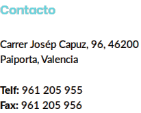
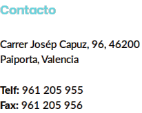
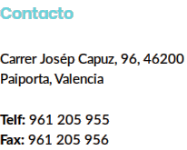
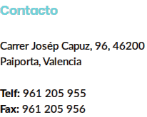

ALUMNE/A GRUP
PROFESSOR/A Horari d'atenció
Data de l'incident Hora Lloc
Descripcio de l'incident:
Tipificacio(1) de l'incident segons l'article 42: Els actes greus d'indisciplina i les injúries i ofenses contra membres de la comunitat educativa que sobrepassen la incorrecció o la desconsideració previstes en el article 35. L'agressió fisica o moral, les amenaces i coaccions i la discriminació greu a qualsevol membre de la comunitat educativa, així com la falta de respecte greu a la integritat i dignitat personal. Les vexacions i humiliacions a qualsevol membre de la comunitat escolar, particularment si tenen un comportament sexista o xenòfon, així com les que es realitzen contra els membres més vulnerables per les seues característiques personals, socials o educatives. L'assetjament escolar. La suplantació de personalitat en actes de vida docent. La falsificació, el deteriorament o la sustracció de documentació acadèmica. Els danys greus causats en els locals, materials o documents del centre o en els bens dels membres de la comunitat educativa. Els actes injustificats que pertorben greument el normal desenvolupament de les activitats del centre. Les actuacions que puguen perjudicar greument la salut i la integritat personal dels membres de la comunitat educativa. La introducció en el centre d'objectes perillosos o substàncies perjudicials per a la salut i la integritat personal dels membres de la comunitat educativa. Les conductes tipificades com a contràries a les normes de convivència del centre educatiu si concorren circumstancies de col-lectivitat o publicitat intencionada per qualsevol mitjà. La incitació o l'estimul a cometre una falta que afecte greument la convivència en el centre. La negativa reiterada al compliment de les mesures educatives correctores adoptades davant de conductes contràries a les normes de convivència. La negativa reiterada al compliment de les mesures disciplinaries adoptades davant de faltes que afecten greument a la convivència en el centre. L'accés indegut o sense autorització a fitxers i servidors del centre. Actes atemptatoris respecte al projecte educatiu, així com al caràcter propi del centre.
En aplicacio de l'article 37 del decret 39/08 sobre drets y deures, es comunica al para/mare de l'alumne la imposicio de la següent mesura correctora:
Tipificacio(3) de l'incident segons l'article 35: Les faltes de puntualitat injustificades. Les faltes d'assistència injustificades. Els actes que alteren el normal desenvolupament de les activitats del centre educatiu, especialment els que alteren el normal desenvolupament de les classes. Els actes d'indisciplina Els actes d'incorreció o desconsideració, les injúries i les ofenses contra els membres de la comunitat educativa. El furt o deteriorament intencionat d'inmobles, materials, documentació o recursos del centre. El furt o deteriorament intencionat dels béns o materials dels membres de la comunitat educativa. Les accions que puguen ser perjudicials per a la integritat i la salut dels membres de la comunitat educativa. La negativa sistematica a portar el material necessari per al desenvolupament del procés d'enseyament-aprenentatge. La negativa a traslladar la informació facilitada als pares, mares, tutors, o utores per part del centre i viceversa. L'alteració o manipulació de la documentació facilitada als pares, mares, tutors, o utores per part del centre. La suplantació de la personalitat del membres de la comunitat escolar. La utilització inadequada de les tecnologies de la informació i comunicació durant les activitats que es realitzen en el centre educatiu. L'us de telèfons mòbils, aparells de so i altres aparells electrònics aliens als procés d'ensenyament-aprenentatge. Durant les activitas que es realitzen en el centre educatiu. Els actes que dificulten o impedisquen el dret i deure de l'estudi dels seus companys y companyes. La incitació o estímul a cometre una falta contrària a les normes de convivència. La negativa al compliment de les mesures correctores adoptades davant de conductes contràries a les normes de convivència. L'us inadequat de les infraestructures i béns o equips materials del centre. La desobediéncia en el compliment de les normes de carácter propi del centre i que estiguen incloses en el seu projecte educatiu.
La comunicacio als pares es fa pels següents mitjans:
Les conductes greument perjudicials per a la convivència en el centre docent només podran ser objecte de mesura disciplinària amb la instrucció prèvia del corresponent expedient disciplinari (art.45.1)
Paiporta,dede 201
Signatura del cap d'estudis/director
(1) El pare o la mare de l'alumne podra retirar l'aparell del dia següent de rebre esta notificacio en la direccio d'estudis.
(2) El pare o la mare de l'alumne disposa d'un termini de 10 dies a partir de rebre esta comunicacio per al preceptiu tramit d'audiencia amb el professor que ha imposat la mesura correctora. Per la qual cosa l'horari d'atencio del professor figura al costal del seu nom i el telefon de l'institut en la capçalera.

 


